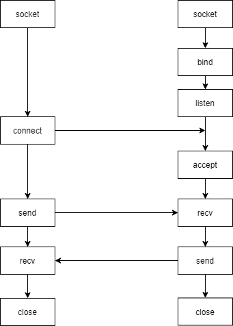

地址信息设置
struct sockaddr 和 struct sockaddr_in
以IPv4为例介绍网络的地址结构。主要涉及的结构体有struct in_addr、struct sockaddr、struct sockaddr_in。其中struct sockaddr是一种通用的地址结构，它可以描述一个IPv4或者IPv6的结构，所有涉及到地址的接口都使用了该类型的参数，但是过于通用的结果是直接用它来描述一个具体的IP地址和端口号十分困难。所以用户一般先使用struct sockaddr_in来构造地址，再将其进行强制类型转换成struct sockaddr以作为网络接口的参数。
xxxxxxxxxx111// man 7 ip2struct sockaddr_in {3 sa_family_t sin_family; /* address family: AF_INET */4 in_port_t sin_port; /* port in network byte order */5 struct in_addr sin_addr; /* internet address */6};7
8/* Internet address. */9struct in_addr {10 uint32_t s_addr; /* address in network byte order */11};大小端转换
xxxxxxxxxx61// h --> host n --> net l --> 32bit s --> 16bit3uint32_t htonl(uint32_t hostlong);4uint16_t htons(uint16_t hostshort);5uint32_t ntohl(uint32_t netlong);6uint16_t ntohs(uint16_t netshort);xxxxxxxxxx81int main() {2 unsigned short us = 0x1234;3 printf("%x\n", us);4 unsigned short us1 = htons(us); // 将端口号从小端转换成大端5 printf("%x\n", us1);6 printf("%x\n", ntohs(us1));7 return 0;8}xxxxxxxxxx61int inet_aton(const char *cp, struct in_addr *inp);5char *inet_ntoa(struct in_addr in);6// 线程安全版本是inet_atop inet_ptoaxxxxxxxxxx81int main(int argc, char *argv[]) {2 //./inet_aton 127.0.0.13 struct sockaddr_in addr;4 inet_aton(argv[1], &addr.sin_addr); // 将点分十进制转换成32位网络字节序5 printf("addr = %x\n", addr.sin_addr.s_addr);6 printf("addr = %s\n", inet_ntoa(addr.sin_addr)); // 将32位网络字节序转换成点分十进制7 return 0;8}域名和IP地址的对应关系
IP层通过IP地址的结构进行路由选择最终找到一条通往目的地的路由，但是一些著名的网站如果采用IP地址的方式提供地址，用户将无法记忆，所以更多的时候需要一个方便人类记忆的域名（比如www.kernel.org）作为其实际IP地址（145.40.73.55）的别名，显然我们需要一种机制去建立域名和IP地址的映射关系，一种方法是修改本机的hosts文件/etc/hosts，但是更加通用的方案是利用DNS协议，去访问一个DNS服务器，服务器当中存储了域名和IP地址的映射关系。与这个操作相关的函数是gethostbyname，下面是其用法：
xxxxxxxxxx91struct hostent *gethostbyname(const char *name);3struct hostent {4 char *h_name; /* official name of host */5 char **h_aliases; /* alias list */6 int h_addrtype; /* host address type */7 int h_length; /* length of address */8 char **h_addr_list; /* list of addresses */9}xxxxxxxxxx271int main(int argc, char *argv[]) {2 ARGS_CHECK(argc, 2);3 struct hostent *pHost = gethostbyname(argv[1]);4 ERROR_CHECK(pHost, NULL, "gethostbyname");5 printf("hname=%s\n", pHost->h_name); // 真实主机名6 for (int i = 0; pHost->h_aliases[i] != NULL; i++) {7 printf("aliases=%s\n", pHost->h_aliases[i]); // 别名列表8 }9 printf("addrtype=%d\n", pHost->h_addrtype); // 地址类型10 printf("addrlength=%d\n", pHost->h_length); // 地址长度11 char buf[128] = {0};12 for (int i = 0; pHost->h_addr_list[i] != NULL; i++) {13 memset(buf, 0, sizeof(buf));14 inet_ntop(pHost->h_addrtype, pHost->h_addr_list[i], buf, sizeof(buf));15 printf("addr=%s\n", buf);16 }17 return 0;18}19/*20$ ./gethostbyname www.baidu.com21hname=www.a.shifen.com22aliases=www.baidu.com23addrtype=224addrlength=425addr=14.215.177.3826addr=14.215.177.3927*/TCP通信

socket
socket函数用于创建一个socket设备。调用该函数时需要指定通信的协议域、套接字类型和协议类型。一般根据选择TCP或者UDP有着固定的写法。socket函数的返回值是一个非负整数，就是指向内核socket设备的文件描述符。
xxxxxxxxxx51int socket(int domain, int type, int protocol);3// domain AF_INET --> IPv4 AF_INET6 --> IPv64// type SOCK_STREAM --> TCP SOCK_DGRAM --> UDP5// protocol IPPROTO_TCP --> TCP IPPROTO_UDP -->UDPconnect
客户端使用connect来建立和TCP服务端的连接。
xxxxxxxxxx11int connect(int sockfd, const struct sockaddr *addr, socklen_t addrlen);xxxxxxxxxx131int main(int argc, char *argv[]) {2 ARGS_CHECK(argc, 3);3 int sfd = socket(AF_INET, SOCK_STREAM, 0);4 ERROR_CHECK(sfd, -1, "socket");5 struct sockaddr_in serAddr;6 memset(&serAddr, 0, sizeof(serAddr));7 serAddr.sin_family = AF_INET;8 serAddr.sin_addr.s_addr = inet_addr(argv[1]);9 serAddr.sin_port = htons(atoi(argv[2]));10 int ret = connect(sfd, (struct sockaddr *)&serAddr, sizeof(serAddr));11 ERROR_CHECK(ret, -1, "connect");12 return 0;13}bind
xxxxxxxxxx11int bind(int sockfd, const struct sockaddr *addr, socklen_t addrlen);xxxxxxxxxx141int main(int argc, char *argv[]) {2 ARGS_CHECK(argc, 3);3 // 创建监听套接字4 int sfd = socket(AF_INET, SOCK_STREAM, 0);5 ERROR_CHECK(sfd, -1, "socket");6 struct sockaddr_in serAddr;7 memset(&serAddr, 0, sizeof(serAddr));8 serAddr.sin_family = AF_INET;9 serAddr.sin_addr.s_addr = inet_addr(argv[1]); // 如果赋值为INADDR_ANY，表示选择本机IP地址10 serAddr.sin_port = htons(atoi(argv[2]));11 int ret = bind(sfd, (struct sockaddr *)&serAddr, sizeof(serAddr));12 ERROR_CHECK(ret, -1, "bind");13 return 0;14}listen
xxxxxxxxxx11int listen(int sockfd, int backlog);一旦启用了listen之后，操作系统就知道该套接字是服务端的套接字，操作系统内核就不再启用其发送和接收缓冲区，转而在内核区维护两个队列结构：半连接队列和全连接队列。半连接队列用于管理成功第一次握手的连接，全连接队列用于管理已经完成三次握手的队列。backlog用来指明全连接队列的长度。如果队列已经满了，那么服务端受到任何再发起的连接都会直接丢弃（大部分操作系统中服务端不会回复RST，以方便客户端自动重传）
使用netstat -an命令可以查看主机上某个端口的监听情况。
xxxxxxxxxx31-- 下面是listen之后的内容2$ netstat -an|grep 27783tcp 0 0 127.0.0.1:2778 0.0.0.0:* LISTENaccept
accept函数由服务端调用，用于从全连接队列中取出下一个已经完成的TCP连接。如果全连接队列为空，那么accept会陷入阻塞。一旦全连接队列中到来新的连接，此时accept操作就会就绪，这种就绪是读操作就绪，所以可以使用select函数的读集合进行监听。当accept执行完了之后，内核会创建一个新的套接字文件对象，该文件对象关联的文件描述符是accept的返回值，文件对象当中最重要的结构是一个发送缓冲区和接收缓冲区，可以用于服务端通过TCP连接发送和接收TCP段。
区分两个套接字是非常重要的。通过把旧的管理连接队列的套接字称作监听套接字，而新的用于发送和接收TCP段的套接字称作已连接套接字。通常来说，监听套接字会一直存在，负责建立各个不同的TCP连接（只要源IP、源端口、目的IP、目的端口四元组任意一个字段有区别，就是一个新的TCP连接），而某一条单独的TCP连接则是由其对应的已连接套接字进行数据通信的。
客户端使用close关闭套接字或者服务端使用close关闭已连接套接字的时候就是主动发起断开连接四次挥手的过程。
xxxxxxxxxx11int accept(int sockfd, struct sockaddr *addr, socklen_t *addrlen);需要特别注意的是，addrlen参数是一个传入传出参数，所以使用的时候需要主调函数提前分配好内存空间。
xxxxxxxxxx91// ...2ret = listen(sfd, 10);3ERROR_CHECK(ret, -1, "listen");4// newFd代表的是跟客户端的TCP连接5socklen_t len;6len = sizeof(struct sockaddr) int newFd = accept(sfd, NULL, &len);7ERROR_CHECK(newFd, -1, "accept");8printf("newFd = %d\n", newFd);9// ...send和recv
send和recv用于将数据在用户态空间和内核态的缓冲区之间进行传输，无论是客户端还是服务端均可使用，但是只能用于TCP连接。将数据拷贝到内核态并不意味着会马上传输，而是会根据时机再由内核协议栈按照协议的规范进行分节，通常缓冲区如果数据过多会分节成MSS的大小，然后根据窗口条件传输到网络层之中。
xxxxxxxxxx21ssize_t send(int sockfd, const void *buf, size_t len, int flags);2ssize_t recv(int sockfd, void *buf, size_t len, int flags);下面是一个完整的客户端和服务端通信的例子：
xxxxxxxxxx191// clinet.c2int main(int argc, char *argv[]) {3 ARGS_CHECK(argc, 3);4 int sfd = socket(AF_INET, SOCK_STREAM, 0);5 ERROR_CHECK(sfd, -1, "socket");6 struct sockaddr_in serAddr;7 memset(&serAddr, 0, sizeof(serAddr));8 serAddr.sin_family = AF_INET;9 serAddr.sin_addr.s_addr = inet_addr(argv[1]);10 serAddr.sin_port = htons(atoi(argv[2]));11 int ret = connect(sfd, (struct sockaddr *)&serAddr, sizeof(serAddr));12 ERROR_CHECK(ret, -1, "connect");13 char buf[64] = {0};14 ret = recv(sfd, buf, sizeof(buf), 0);15 printf("buf=%s\n", buf);16 send(sfd, "helloserver", 11, 0);17 close(sfd);18 return 0;19}xxxxxxxxxx291// server.c2int main(int argc, char *argv[]) {3 ARGS_CHECK(argc, 3);4 // 创建监听套接字5 int sfd = socket(AF_INET, SOCK_STREAM, 0);6 ERROR_CHECK(sfd, -1, "socket");7 struct sockaddr_in serAddr;8 memset(&serAddr, 0, sizeof(serAddr));9 serAddr.sin_family = AF_INET;10 serAddr.sin_addr.s_addr = inet_addr(argv[1]);11 serAddr.sin_port = htons(atoi(argv[2]));12 int ret = bind(sfd, (struct sockaddr *)&serAddr, sizeof(serAddr));13 ERROR_CHECK(ret, -1, "bind");14 ret = listen(sfd, 10);15 ERROR_CHECK(ret, -1, "listen");16 // newFd代表的是跟客户端的TCP连接17 socklen_t len;18 len = sizeof(struct sockaddr);19 int newFd = accept(sfd, NULL, &len);20 ERROR_CHECK(newFd, -1, "accept");21 ret = send(newFd, "helloclient", 11, 0);22 ERROR_CHECK(ret, -1, "send");23 char buf[64] = {0};24 ret = recv(newFd, buf, sizeof(buf), 0);25 printf("buf=%s\n", buf);26 close(newFd);27 close(sfd);28 return 0;29}需要特别注意的是，send和recv的次数和网络上传输的TCP段的数量没有关系，多次的send和recv可能只需要一次TCP段的传输。另外一方面，TCP是一种流式的通信协议，消息是以字节流的方式在信道中传输，这就意味着一个重要的事情，消息和消息之间是没有边界的。在不加额外约定的情况下，通信双方并不知道发送和接收到底有没有接收完一个消息，有可能多个消息会在一次传输中被发送和接收（"粘包"），也有有可能一个消息需要多个传输才能被完整的发送和接收("半包")。
TIME_WAIT和setsockopt
xxxxxxxxxx11int setsockopt(int sockfd, int level, int optname, const void *optval, socklen_t optlen);xxxxxxxxxx51//...2int reuse = 1;3ret = setsockopt(sfd, SOL_SOCKET, SO_REUSEADDR, &reuse, sizeof(reuse));4ERROR_CHECK(ret, -1, "setsockopt");5//...后续再执行bind等操作recv和send的标志
MSG_DONTWAIT
MSG_PEEK
UDP通信

sendto和recvfrom
xxxxxxxxxx21ssize_t sendto(int sockfd, const void *buf, size_t len, int flags, const struct sockaddr *dest_addr, socklen_t addrlen);2ssize_t recvfrom(int sockfd, void *buf, size_t len, int flags, struct sockaddr *src_addr, socklen_t *addrlen);xxxxxxxxxx191// client.c2int main(int argc, char *argv[]) {3 ARGS_CHECK(argc, 3);4 int sfd = socket(AF_INET, SOCK_DGRAM, 0);5 ERROR_CHECK(sfd, -1, "socket");6 struct sockaddr_in serAddr;7 memset(&serAddr, 0, sizeof(serAddr));8 serAddr.sin_family = AF_INET;9 serAddr.sin_addr.s_addr = inet_addr(argv[1]);10 serAddr.sin_port = htons(atoi(argv[2]));11 char buf[64] = {0};12 socklen_t len = sizeof(serAddr);13 sendto(sfd, "hello udp", 9, 0, (struct sockaddr *)&serAddr, len);14 sendto(sfd, "hello server", 12, 0, (struct sockaddr *)&serAddr, len);15 recvfrom(sfd, buf, sizeof(buf), 0, (struct sockaddr *)&serAddr, &len);16 printf("buf=%s\n", buf);17 close(sfd);18 return 0;19}xxxxxxxxxx241// server.c2int main(int argc, char *argv[]) {3 ARGS_CHECK(argc, 3);4 int sfd = socket(AF_INET, SOCK_DGRAM, 0);5 ERROR_CHECK(sfd, -1, "socket");6 struct sockaddr_in serAddr;7 memset(&serAddr, 0, sizeof(serAddr));8 serAddr.sin_family = AF_INET;9 serAddr.sin_addr.s_addr = inet_addr(argv[1]);10 serAddr.sin_port = htons(atoi(argv[2]));11 int ret = bind(sfd, (struct sockaddr *)&serAddr, sizeof(serAddr));12 ERROR_CHECK(ret, -1, "bind");13 char buf[4] = {0};14 struct sockaddr_in cliAddr;15 memset(&cliAddr, 0, sizeof(cliAddr));16 socklen_t len = sizeof(cliAddr);17 recvfrom(sfd, buf, sizeof(buf), 0, (struct sockaddr *)&cliAddr, &len);18 printf("buf=%s\n", buf);19 recvfrom(sfd, buf, sizeof(buf), 0, (struct sockaddr *)&cliAddr, &len);20 printf("buf=%s\n", buf);21 sendto(sfd, "hello client", 12, 0, (struct sockaddr *)&cliAddr, len);22 close(sfd);23 return 0;24}epoll
epoll的基本函数
和select一样，epoll也是一种IO多路复用机制，它可以监听多个设备的就绪状态，让进程或者线程只在有事件发生之后再执行真正的读写操作。epoll可以在内核态空间当中维持两个数据结构：监听事件集合和就绪事件队列。监听事件集合用来存储所有需要关注的设备（即文件描述符）和对应操作（比如读、写、挂起和异常等等），当监听的设备有事件产生时，比如网卡上接收到了数据并传输到了缓冲区当中时，硬件会采用中断等方式通知操作系统，操作系统会将就绪事件拷贝到就绪事件队列中，并且找到阻塞在epoll_wait的线程，让其就绪。监听事件集合通常是一个红黑树，就绪事件队列是一个线性表。
和select相比，epoll的优势如下：
除了水平触发，还支持边缘触发。
监听事件集合容量很大，有多少内存就能放下多少文件描述符。
监听事件集合常驻内核态，调用
epoll_wait函数不会修改监听性质，不需要每次将集合从用户态拷贝到内核态。监听事件和就绪事件的状态分为两个数据结构存储，当
epoll_wait就绪之后，用户可以直接遍历就绪事件队列，而不需要在所有事件当中进行轮询。
有了这些优势之后，epoll逐渐取代了select的市场地位，尤其是在管理巨大量连接的高并发场景中，epoll的性能要远超select。
xxxxxxxxxx141int epoll_create(int size);2int epoll_ctl(int epfd, int op, int fd, struct epoll_event *event);3int epoll_wait(int epfd, struct epoll_event *events,4 int maxevents, int timeout);5typedef union epoll_data {6 void *ptr;7 int fd;8 uint32_t u32;9 uint64_t u64;10} epoll_data_t;11struct epoll_event {12 uint32_t events; /* Epoll events */13 epoll_data_t data; /* User data variable */14};xxxxxxxxxx621int main(int argc, char *argv[]) {2 ARGS_CHECK(argc, 3);3 // 创建监听套接字4 int sfd = socket(AF_INET, SOCK_STREAM, 0);5 ERROR_CHECK(sfd, -1, "socket");6 struct sockaddr_in serAddr;7 memset(&serAddr, 0, sizeof(serAddr));8 serAddr.sin_family = AF_INET;9 serAddr.sin_addr.s_addr = inet_addr(argv[1]);10 serAddr.sin_port = htons(atoi(argv[2]));11 int ret = 0;12 // reuse=1表示允许地址重用13 int reuse = 1;14 ret = setsockopt(sfd, SOL_SOCKET, SO_REUSEADDR, &reuse, sizeof(reuse));15 ERROR_CHECK(ret, -1, "setsockopt");16 ret = bind(sfd, (struct sockaddr *)&serAddr, sizeof(serAddr));17 ERROR_CHECK(ret, -1, "bind");18 ret = listen(sfd, 10);19 ERROR_CHECK(ret, -1, "listen");20 // newFd代表的是跟客户端的TCP连接21 int newFd = accept(sfd, NULL, NULL);22 ERROR_CHECK(newFd, -1, "accept");23 char buf[64] = {0};24 int epfd = epoll_create(1);25 ERROR_CHECK(epfd, -1, "epoll_create");26 struct epoll_event event, evs[2];27 memset(&event, 0, sizeof(event));28 // 把关心的描述符和对应的时间填到结构体里29 event.data.fd = STDIN_FILENO;30 event.events = EPOLLIN;31 ret = epoll_ctl(epfd, EPOLL_CTL_ADD, STDIN_FILENO, &event);32 ERROR_CHECK(ret, -1, "epoll_ctl");33 event.data.fd = newFd;34 ret = epoll_ctl(epfd, EPOLL_CTL_ADD, newFd, &event);35 ERROR_CHECK(ret, -1, "epoll_ctl");36 int readyNum = 0;37 while (1) {38 readyNum = epoll_wait(epfd, evs, 2, -1); // 不用每次都重置监听集合了39 for (int i = 0; i < readyNum; i++) {40 if (evs[i].data.fd == STDIN_FILENO) {41 memset(buf, 0, sizeof(buf));42 read(STDIN_FILENO, buf, sizeof(buf));43 send(newFd, buf, strlen(buf) - 1, 0);44 } else if (evs[i].data.fd == newFd) {45 memset(buf, 0, sizeof(buf));46 ret = recv(newFd, buf, sizeof(buf), 0);47 // 对端断开的时候，newFd一直可读48 // recv读数据的返回值是049 if (0 == ret) {50 printf("byebye\n");51 close(sfd);52 close(newFd);53 return 0;54 }55 printf("buf=%s\n", buf);56 }57 }58 }59 close(newFd);60 close(sfd);61 return 0;62}epoll的触发方式
epoll 支持两种主要的事件触发方式：水平触发（Level Triggered, LT）和边缘触发（Edge Triggered, ET）。这两种方式在如何通知应用程序文件描述符就绪方面有显著不同。
水平触发
水平触发(Level Triggered, LT)是 epoll 的默认工作模式，其行为模式与传统的 select 和 poll 类似。
工作原理与特性：
条件满足即通知：只要文件描述符处于某种就绪状态（例如，读缓冲区有数据可读，或写缓冲区可以写入数据），
epoll_wait就会返回该文件描述符。持续通知：如果应用程序在一次
epoll_wait返回后没有完全处理该文件描述符上的事件（例如，只读取了读缓冲区中的部分数据，导致缓冲区仍然非空），那么在下一次调用epoll_wait时，只要该条件依然满足（缓冲区仍有数据），epoll_wait仍然会通知这个文件描述符。类比：可以将其想象成一个水位传感器。只要水位高于某个阈值（条件满足），传感器就会一直发出警报（通知）。
优点：
编程相对简单：处理逻辑更直观，不容易遗漏事件。即使一次没有处理完所有数据，下次
epoll_wait还会提醒。鲁棒性较高：对于事件处理的遗漏不那么敏感。
与
select/poll行为相似：更容易从旧的 I/O 模型迁移。
缺点：
可能效率较低：如果一个文件描述符持续处于就绪状态但应用程序没有及时或完全处理，
epoll_wait可能会被频繁唤醒并通知同一个事件，造成不必要的开销。但在epoll中，这种影响比select/poll要小，因为epoll只返回真正就绪的 FD。
使用场景：
大多数情况下，如果对极致性能没有严苛要求，或者希望编程模型更简单，LT 是一个不错的选择。
从
select/poll迁移过来的应用。
边缘触发
边缘触发 (Edge Triggered, ET)是一种更高效但也更复杂的模式。
工作原理与特性：
状态变化时通知：
epoll_wait仅在被监控的文件描述符上检测到状态变化时（例如，从不可读变为可读，或从不可写变为可写）才会通知一次。一次性通知：当
epoll_wait因为某个文件描述符上的事件而被唤醒后，它通常不会再因为同样的旧事件而再次唤醒，直到该文件描述符上发生新的状态变化。例如，如果一个套接字的读缓冲区从空变为非空，ET模式会通知一次。如果应用程序只读取了部分数据，导致缓冲区仍然非空，ET模式下
epoll_wait不会再次因为“缓冲区仍有数据”这个旧状态而通知，除非有新的数据到达该缓冲区。
要求彻底处理：使用 ET 模式时，当收到文件描述符就绪的通知后，应用程序必须持续地进行读/写操作，直到相应的操作返回
EAGAIN或EWOULDBLOCK错误（对于非阻塞的 FD），表示数据已读完或写缓冲区已满。如果不这样做，可能会导致事件丢失，因为epoll不会再次提醒处理剩余的数据。类比：可以将其想象成一个事件触发器。只有当事件发生的那一刻（例如，门被打开的瞬间），触发器才会响一次。即使门保持打开状态，它也不会再响，除非门被关闭后再次打开（新的事件）。
优点：
效率更高：减少了
epoll_wait被唤醒的次数，因为只有在状态真正改变时才通知。这在高并发环境下可以显著提高性能。避免“惊群”：在多线程/多进程环境下，当一个事件发生时，ET 模式通常只会唤醒一个正在等待
epoll_wait的任务来处理该事件，而 LT 模式下，如果事件未被完全处理，所有等待的任务都可能被唤醒。
缺点：
编程复杂度高：要求开发者非常小心地处理 I/O。必须循环读取或写入直到返回
EAGAIN或EWOULDBLOCK。容易出错：如果未能正确处理（例如，没有读尽所有数据），可能会导致数据丢失或程序饥饿（starvation），因为后续的事件可能依赖于之前数据的完全处理。
文件描述符必须是非阻塞的：与 ET 模式配合使用的文件描述符通常必须设置为非阻塞模式（
O_NONBLOCK），以避免在读写操作中因为没有数据或缓冲区满而阻塞整个处理流程。
使用场景：
对性能要求极高的应用，如高并发网络服务器（Nginx 就广泛使用 ET 模式）。
LT与ET的区别
| 特性 | 水平触发 (LT) | 边缘触发 (ET) |
|---|---|---|
| 通知时机 | 只要条件满足就通知 | 仅在状态发生变化时通知一次 |
| 持续性 | 若未完全处理，下次 epoll_wait 仍会通知 | 若未完全处理，通常不会再次通知，除非有新事件发生 |
| 处理要求 | 可以不一次性处理完所有数据 | 必须一次性处理完所有数据（读/写直到 EAGAIN） |
| 编程复杂度 | 相对简单 | 较高，容易出错 |
| 效率 | 相对较低，可能有冗余通知 | 相对较高，通知次数少 |
| FD模式 | 可用于阻塞或非阻塞 FD | 强烈建议（通常是必须）与非阻塞 FD 一起使用 |
| 健壮性 | 对事件处理遗漏的容忍度较高 | 对事件处理遗漏非常敏感，可能导致数据丢失或程序挂起 |